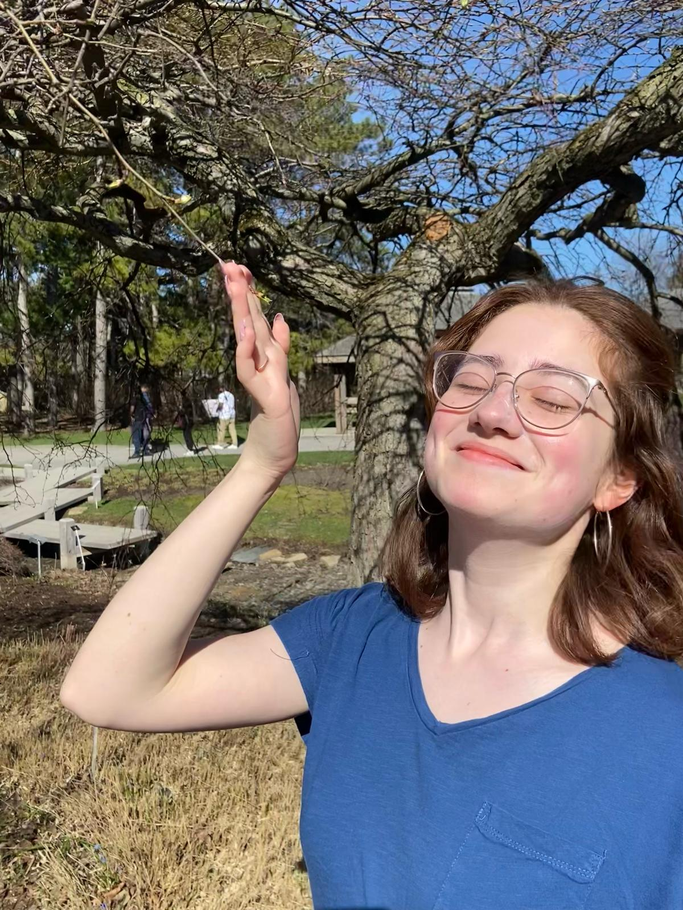

About Me
Hello! I am a fourth year undergraduate student at University of Toronto, studying mathematics. I share some of my math notes taken during my undergraduate journey here.
My CV is here and my email is ceren.sahin@mail.utoronto.ca
Selected Exercise Solutions
Other Notes
- Classification of Locally Symmetric Riemannian Spaces [MAT464 Final Paper]
-
Two Equivalent Parametrizations of Cohomological Representations
of the Unitary Group U(p,q)
[Summer 2025 Research Project with Liam Gavreau under Prof. Gerbelli-Gauthier] -
Irreducible Representations of sl2C and Vector Fields on R^2
Induced by Möbius Transformations
[Algebraic Combinatorics Reading Course Final Project]
Academic History
Winter 26
- MAT1301 [Algebraic Topology]
- MAT445 [Representation Theory]
- MAT357 [Real Analysis I]
- MAT351 [PDEs]
Fall 25
- MAT464 [Riemannian Geometry]
- MAT354 [Complex Analysis I]
- MAT351 [PDEs]
- MAT395 [Reading Course on Group Cohomology]
- CSC318 [The Design of Interactive Media]
Winter 25
- MAT347 [Abstract Algebra]
- MAT367 [Differential Geometry]
- MAT257 [Analysis II]
- MAT267 [ODEs]
- MAT295 [Reading Course in Algebraic Combinatorics]
Fall 24
- MAT347 [Abstract Algebra]
- MAT327 [Topology]
- MAT257 [Analysis II]
- CSC236 [Intro to Theory of Computation]
- CSC207 [Software Design]
Winter 24
- MAT247 [Linear Algebra 2]
- MAT157 [Analysis I]
- MUS303
- CSC111
- PHL240
Fall 23
- MAT240 [Linear Algebra 1]
- MAT157 [Analysis I]
- CSC110
- BIO120
- PSY100